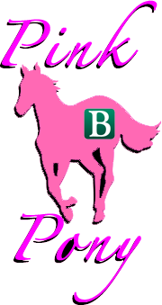

Welcome to PinkPony's site for HandsDance.
HandsDance is our hack for the 2014 Spring PennApps. It is a LeapMotion controlled video game where the player has to match gestures in order to keep in time with the song. Think of it as a cross between Dance Dance Revolution and a theremin.

This page is for PinkPony's App for the Spring 2014 PennApps hackathon.
Team
-
Gabe Ochoa (@gabeochoa),
Alex Terela (@terela),
Varun Emany (@mvarun116),
and Htin Linn Kyaw (@htinlinn)